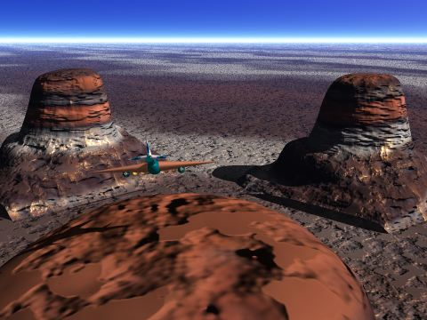
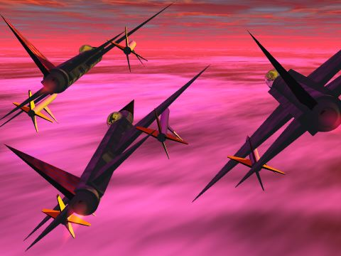
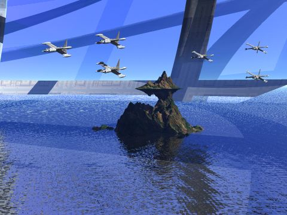

Bart and Homer's Future Meals (BHFM)
FLYING DEATH VALLEY SERIES
(under construction)

|
This is a new series that is still under construction. It is, very simply, a storm-wing 4231 fighter flying through Death Valley. Check out the shadows and the metallic wing structure. More to follow - Alex

|
The new machine.

|
The new machine in action.

|
The new machine in action (II).

|
The new machine in action (III).
|
 |
The new machine in action (IV).

|
The new machine in action (V). F-16 fighter launches missile.
|
 |
Three Sukhoi Fighters flying across the dawn

CABIN SERIES

|

|
This is a rustic old lodge

|
This is the far-side of the bar (the lonely table)
LAUNCH ARCO
|
 |
This is a view inside the Launch ARCO from Sim-City 2000.
Alex Howlett
and
Kyle Ross
This page is under construction - March 28, 1997
Last Update February 18, 1998
All drawings, graphics etc. displayed here were designed with Mechanisto Version 1.0.2. and Bryce II by two ten (now eleven) year olds. Feel free to copy or download them!
We will be designing more graphics and will upload them soon. Be sure to check this program out!
Kyle and Alex

Return to the SFU homepage.
|
Alex
|
Anna
|
Becky
|
Mike
]
Site Visits Since March 28, 1997